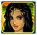
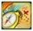

5-Reel 20-line Slots
The objective of Desert Treasure II is to obtain winning symbol combinations by spinning the reels.
To play the game:
- A wagering denomination (coin value) can be chosen by clicking the Click to Change denomination button in the lower left-hand corner of the screen.
- Line bets are chosen by clicking Bet per Line. Each click adds a coin to the line bet. When the maximum amount is reached (10 coins of the selected wagering denomination), clicking the button again resets the line bet to one coin.
- Paylines are chosen by clicking Lines. Each click activates a payline. When all paylines are activated, clicking the button again resets it to one active payline. Paylines can also be activated by using the numbered buttons on either side of the reels. Selecting a high payline includes all the lower ones too. For example, selecting payline 6 also activates paylines 1 through 5.
- Total bet per game round = line bet X active paylines.
- Clicking Spin spins the reels with the current selection of lines and line bets. During the reel spins the Spin button changes intoStop. Clicking Stop ends the spin animation and immediately displays the spin result.
- Reels can also be spun using the Auto Start function. Clicking + or — above Auto Start selects the successive number of spins to be enabled. Clicking Auto Start spins the reels. The Auto Start button changes into Stop during the Auto Start mode. The Auto Start mode ends when the reels have been spun the number of times determined by the player, or when the player clicksStop.
- Wins are calculated according to the paytable. Line win = line bet X corresponding multiplier according to the paytable. Scatter win = total bet X corresponding multiplier according to the paytable. The paytable can be accessed via the Info page.
- On a given payline, only the highest payline winning combination pays while simultaneous winnings on different paylines are accumulated.
- In the case of a winning spin, the Win field displays the accumulating winnings. The Win ticker can be stopped by clicking anywhere on the screen to display the total win amount immediately.
- Payline wins and the total win are also displayed on the strip located at the bottom of the reels or the game window.
Info page:
- Clicking Info opens the reference screen describing different game components. Clicking the arrow buttons at the lower right-hand corner of the screen enables navigating between the different info screens.
- The Paytable screen shows all winning combinations. When opened after a winning spin, the winning symbol combinations (number of symbols and bet multiplier) are highlighted and blink.
- The Free Games screen describes the symbol combinations necessary to trigger the Free Games feature and describes the Free Games feature rules.
- The Oasis Bonus screen describes the symbol combinations necessary to enter the Oasis Bonus and describes its rules.
- Clicking Show Paylines on the Paytable page, opens a screen that illustrates all possible payline combinations. Clicking Hide Paylines closes this screen and returns to the Paytable page.
- Clicking Back exits the Info screen and returns to the game.
Paylines:
- Active paylines are represented by lines that appear over the reels. Paylines can be activated and their shape displayed by progressively clicking Lines.
- Only active paylines can register wins.
- There is a difference between the line bet and the total bet. The line bet shows how much is being bet on a single payline. The total bet shows how much is being bet in total on the game round. Payouts shown in the paytable are multiplied by the line bet.
The Scatter symbol is an exception to these rules. More information about the Scatter symbol can be found below.
About payouts:- Payouts are listed on the Paytable screen. To find the possible win amount, the line bet must be multiplied by the payout.
- If two payline winning combinations occur on the same line, the higher of them is paid out. If more than one active payline has a winning combination, the winnings are accumulated.
- Winning combinations can only be on an active payline, must start from the leftmost reel and the symbols have to be consecutive.
The Scatter symbol is an exception to these rules. More information about the Scatter symbol can be found below.
Wild symbol
The Wild symbol appears only on reels 2, 3 and 4. It can stand for any other symbol, except Scatter and Bonus, to make the best possible winning combination.
The Wild symbol acts as Expanding Wild when substituting during the main game or during Free Games – it expands to cover the entire reel where it appears and each position on this reel is considered to be a Wild symbol.
Scatter symbol
The Scatter symbols  do not have to occur on any particular payline. If there are two or more Scatters in any position in the spin results, the payout earned is multiplied by the total bet and added to payline winnings.
If three or more Scatter symbols appear in any position on the reels simultaneously during main game, the Free Games feature is triggered. If three or more Scatter symbols appear in any position on the reels simultaneously during the Free Games, the Free Games feature is retriggered, as explained below.
Bonus symbol
If three or more consecutive Bonus symbols  appear on an active payline, starting with the leftmost reel, during the main game or during Free Games, the Oasis Bonus is triggered.
Free Games
Three or more Scatters in any position on the reels simultaneously during the main game trigger 15 Free Games with all reel wins doubled. Oasis Bonus wins are not doubled. Three or more Scatters in any position on the reels simultaneously during Free Games win 15 more Free Games, with all reel wins doubled.
To start the Free Games, click on Click to Start. A message appears saying that a Free Games round follows. After a while the Free Games begin automatically.
During the Free Games, the reels are spun automatically using the same number of lines and bets per line as on the spin that won the Free Games. After each spin, the win is displayed in the Win field. The Free Games Win field shows the accumulated winnings from the current Free Games.
After all Free Games have been completed, a result board summarizes the winnings. Game win shows the winnings that were received from the main game spin that won the Free Games. Feature win shows the winnings that were received during the Free Games. Total win shows the accumulated winnings (Game Win and Feature Win added up).
Clicking Continue will return you to the main game. When returning to the main game, clicking anywhere on the screen stops the win ticker and displays the full prize.
Free Game wins are added to the payline and Scatter wins.
If the Free Games are triggered during the Auto Start mode, the feature begins after the player clicks on Click to Start. When all Free Games have been played and the player clicks Continue on the screen summarizing the Free Games win, the Auto Start mode resumes. When returning to the main game, clicking anywhere on the screen stops the win ticker and displays the full prize.
Oasis Bonus
Three or more consecutive Bonus symbols on an active payline, beginning with the leftmost reel, trigger the Oasis Bonus game.
To start the Oasis Bonus, click on Click to Start.
In the beginning of the Bonus, the player picks treasure boxes for cash. The number of Bonus symbols that triggered the feature determines the number of picks you can make – 3, 4 or 5 out of 7. Click on a box to make a selection. Every selection wins a cash prize, which is a multiple (x10, x15, x20, x30, x40, x50, x60, x70, x80, x90 or x100) of the line bet on the spin that triggered the feature. If any of the treasure boxes you pick contains a treasure map, in addition to the cash prize, you will be taken to the second stage of the Bonus when you finish picking all the treasure boxes. All cash prizes are added up.
If you did not find a map, the Oasis Bonus will end when you finish making your picks.
If you have found a map, it will be shown to you. Choose between the two locations on the map (the Secret Tent or the Hidden Sanctum) and that place will appear on the screen.
In the Hidden Sanctum, you pick vases for cash. The number of Bonus symbols that triggered the feature determines the number of picks you can make – 3, 4 or 5 out of 7. Click on a vase to make a selection. Every selection wins a cash prize, which is a multiple (x10, x15, x20, x30, x40, x50, x60, x70 or x80) of the line bet on the spin that triggered the feature. All cash prizes are accumulated and are added to the winnings from the first stage of the Bonus.
In the Secret Tent, you pick fruit bowls for cash. The number of Bonus symbols that triggered the feature determines the number of picks you can make – 3, 4 or 5 out of 7. Click on a bowl to make a selection. Every selection wins a cash prize, which is a multiple (x10, x15, x20, x30, x40, x50, x60, x70 or x80) of the line bet on the spin that triggered the feature. All cash prizes are accumulated and are added to the winnings from the first stage of the Bonus.
At the end of the Oasis Bonus game, a win screen displays your winnings. Game win shows the winnings that were received from the main game or free game spin that won the Bonus. Feature win shows the winnings that were received during the Bonus. Total Winshows the accumulated winnings (Game Win and Feature Win added up). If no winnings were received during the spin that won the Bonus, then only the Total Win field will be shown.
Click Continue to return to the slot reels.
If the Oasis Bonus is triggered during the Auto Start mode, the feature begins after the player clicks on Click to Start. The player has to make selections in the first or both stages of the Bonus. When the Oasis Bonus is over and the player clicks Continue on the screen summarizing the Bonus win, the Auto Start mode resumes. When returning to the reels, clicking anywhere on the screen stops the win ticker and displays the full prize.
Return to Player
The theoretical percentage return to player (RTP) is 96.21%.